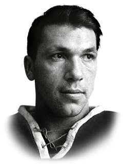

Эту пятилетку можно смело считать самой успешной в 70-летней истории «Спартака». Два чемпионства из четырёх в истории клуба, два кубка СССР из двух в его истории. Плюс к двум золотым ещё два комплекта серебряных медалей.
Капитан «Спартака»
Борис Майоров на
пьедестале. 1967
Во второй раз в своей истории красно-белые стали чемпионами страны в сезоне-1966/1967. Старший тренер Всеволод Бобров работал в команде уже третий сезон, а ведь в начале своего спартаковского пути он говорил, что ему надо как раз три года, чтобы привести команду к золотым медалям. Один из легендарнейших в прошлом хоккеистов и футболистов страны выполнил своё обещание.
«Спартак» досрочно обеспечил себе чемпионское звание и установил рекорд по заброшенным шайбам — 303 гола в 44 матчах. Уму непостижимо! О чём говорить, если пара защитников Блинов — Макаров забросила на двоих 34 шайбы, по 17 на брата. К сожалению, Министерство обороны приняло решение убрать армейца Боброва из «Спартака». Позже Евгений Зимин сказал, что если бы Всеволод Михайлович остался, «Спартак» из следующих десяти чемпионатов выиграл бы минимум семь. Вот такой был потенциал у тренера и его команды.
В следующем, серебряном, сезоне старшим тренером был назначен завершивший карьеру игрока Евгений Майоров, которого довольно скоро сменил Николай Карпов. Николай Иванович и привёл красно-белых к третьему чемпионству в сезоне-1968/1969.
 Виктор Зингер на
Виктор Зингер наруках партнёров
Все помнят знаменитый решающий матч ЦСКА — «Спартак» со всем руководством страны на трибунах. Напомним, красно-белых устроила бы и ничья. «Спартак» вёл 2:1, но армейцы давили, и Владимир Петров вроде бы сравнял счёт под занавес первой половины третьего периода. Однако судья-секундометрист рапортовал, что время закончилось. Команды в то время менялись воротами в середине заключительной трети матча. Анатолий Тарасов увёл свою команду в раздевалку и только по приказу Генерального секретаря ЦК КПСС Леонида Брежнева армейцы вернулись на площадку спустя 35 минут. Пауза пошла на пользу «Спартаку». Его лидеры отдохнули, а лидеры соперника наоборот остыли. В итоге 3:1, и «Спартак» — чемпион!
Сезон-1969/1970 снова стал серебряным, но к нему добавилась первая победа в Кубке СССР. К сожалению, спартаковцы уступили в финале Кубка европейских чемпионов. Уступили всё тому же ЦСКА, победителю предыдущего розыгрыша трофея. Первую игру финала «Спартак» выиграл у армейцев 3:2, во второй вёл в две шайбы, но необъяснимое стечение обстоятельств позволило армейцам забросить в ворота Виктора Криволапова столько, сколько нужно было для итоговой победы.
Николая Карпова заменил на посту главного тренера Борис Майоров. Под началом знаменитого спартаковского капитана в сезоне-1970/1971 команда впервые за долгое время осталась без медалей, но зато повторила успех в Кубке СССР, обыграв в финале ленинградский СКА, которому уступила бронзу чемпионата.

Виктор Блинов,
защитник с
сильнейшим броском
в стране
И о грустном. Омский самородок Виктор Блинов, обладавший самым сильным броском в нашем хоккее, был одним из немногих немосквичей в «Спартаке» в тот период. Он стал чемпионом страны с красно-белыми, успел выиграть Олимпиаду-1968. Вернувшись тем же летом из отпуска, стал готовиться к сезону в составе «Спартака» и умер во время тренировки, когда команда играла в баскетбол. Блинову было всего двадцать два года.
Надо ещё сказать о том, что в 1969 году произошли изменения в правилах, в частности, была разрешена силовая борьба по всей площадке, а не только в своей зоне.